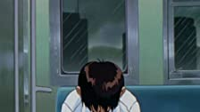
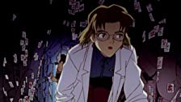
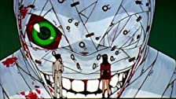

Número
Nombre
Imágen
Episodio: 1
Angel Attack

Episodio: 2
The Beast
Episodio: 3
A Transfer

Episodio: 4
Hedgehog's Dilemma

Episodio: 5
Rei I

Episodio: 6
Rei II

Episodio: 7
A Human Work
Episodio: 8
Asuka Strikes!

Episodio: 9
Both of You, Dance Like You Want to Win!
Episodio: 10
Magma Diver
Episodio: 11
The Day Tokyo-3 Stood Still
Episodio: 12
She said, 'Don't make others suffer for your personal hatred.'
Episodio: 13
Lilliputian Hitcher

Episodio: 14
Weaving a Story

Episodio: 15
Those women longed for the touch of others' lips, and thus invited their kisses.
Episodio: 16
Splitting of the Breast

Episodio: 17
Fourth Child

Episodio: 18
Ambivalence

Episodio: 19
Introjection

Episodio: 20
WEAVING A STORY 2: oral stage

Episodio: 21
He was aware that he was still a child.

Episodio: 22
Don't Be.

Episodio: 23
Rei III
Episodio: 24
The Beginning and the End, or 'Knockin' on Heaven's Door'

Episodio: 25
Do you love me?

Episodio: 26
Take care of yourself.